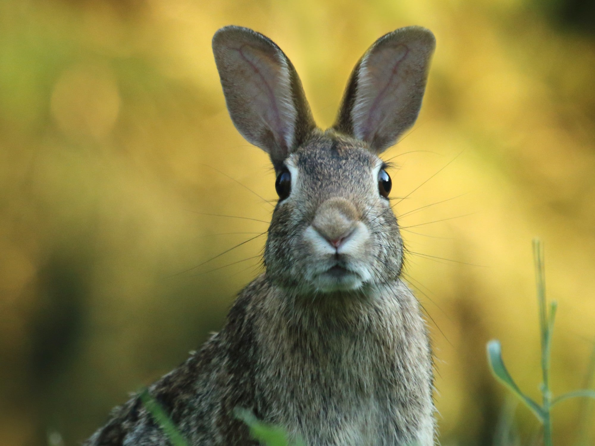

We are tyring to create mathematical models which can predict the animals' risk of extinction
Team: Z00
Members:
Trang Dang
Truong Dang
Anand Patel
Leon Gao
Inspiration
Based on the zoo theme provided to us and underfunding of animal welfare around the world during the COVID-19 pandemic, we decided to build a website that provides both non-profit organizations and users with essential statistics, predicting data about animal populations. So, they can raise awareness about nature then pay attention to the natural activities.
What it does
We built a website made for welfare NGOs to consider the prediction of animal species populations. Therefore, they can have a clear view of nature at the moment in order to raise suitable campaigns that ask for people’s support and donation. Users also can access this website so as to view the information of NGOs, their campaigns, the statistics, from which make their decisions to participate in certain campaigns.
